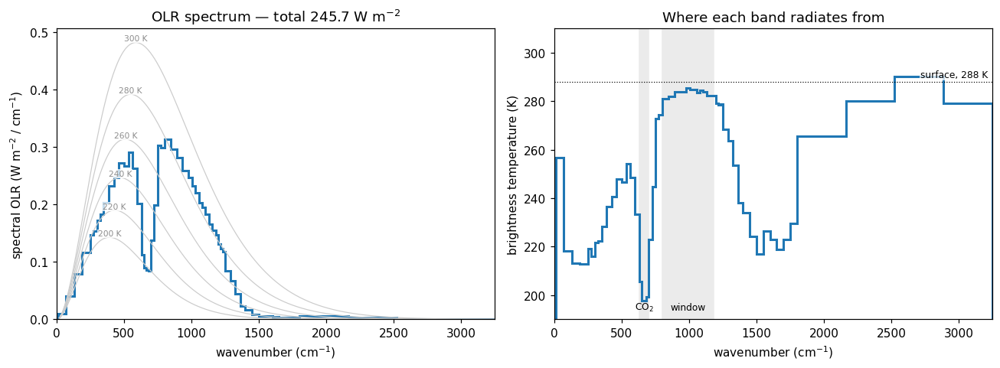

ε is not a number
Chapter 5 of the course notes builds a single-layer atmosphere: a shell of emissivity ε over a surface, one radiating level, one emission temperature. Solve its energy balance and a surface temperature drops out — the greenhouse effect in three lines of algebra.
This page asks what that single number is standing in for.
This page draws a spectrum, so it fetches a ~5 MB spectral table once, on top of the climt wheel — 56 bands instead of the 14 that ship inside the package. Your browser caches it, so pages 2 and 3, which use the same table, load it for free. Pages 4–6 do not need it at all.
If the fetch fails the page still runs: it falls back to the shipped 14-band table, and the only thing you lose is resolution.
The shell model gets a great deal right with very little. Give the shell an emissivity ε, let it absorb εσT⁴ from the surface and re-emit εσT_a⁴ up and down, and the surface warms above its bare-rock temperature by an amount that depends on ε alone. One number for the whole atmosphere, one radiating level, one emission temperature.
The question this page answers is whether that number exists. Real absorption is a property of wavelength: CO₂ absorbs strongly near 15 µm and hardly at all near 10 µm, and water vapour is strong everywhere except a band in between. If ε varies across the spectrum, then the ε in your shell model is an average — and the useful question becomes: an average over what?
The profile we hand to the radiation code
Nothing here is computed by a model. We state a sounding outright — a 288 K surface, a 6.5 K/km troposphere, 80% relative humidity, an isothermal 200 K stratosphere — and ask the radiation code what it makes of it.
lw is a component: an object you construct once and then call. Calling it returns two dictionaries — tendencies (how fast radiation is changing the temperature) and diagnostics (everything else it computed on the way). We want a diagnostic, and specifically one with a band axis: upwelling_longwave_flux_in_air_per_band is the upward flux at every interface level and in each of the component’s 56 spectral bands. Take its top row and you have the outgoing longwave radiation, split by wavenumber.
Dividing each band’s flux by the band’s width gives a spectral flux density in W m⁻² per cm⁻¹, which is what a satellite spectrometer reports. Inverting the Planck function on that gives a brightness temperature: the temperature a blackbody would need in order to radiate what we see at that wavenumber.

This is the figure the cell above produces. Live cells need WebAssembly; if your browser blocks it, the static version is here. It is rendered from this page’s own cell by _artifacts/generate.py, so it cannot drift from what you would get by running it — but it is fixed at the defaults above, and the point of the cell is that you can change them.
Reading the figure
The left panel is the classic satellite picture, and the gray Planck curves are what make it legible: they are what the OLR would be if the atmosphere radiated as a blackbody at 300, 280, … 200 K. The blue spectrum crosses them. It is not tracking any one of them.
Two features carry the argument.
The CO₂ core, 630–700 cm⁻¹ (15 µm). The spectrum plunges to the 200 K curve. This band is so opaque that the photons escaping to space were emitted high in the stratosphere, and their brightness temperature is the temperature there — about 200 K, some 88 K colder than the ground.
The window, 800–1180 cm⁻¹ (8.5–12.5 µm). The spectrum rides just under the 285 K curve, averaging 284 K across the twelve bands that span it — within a few degrees of the surface. Here the atmosphere is nearly transparent: what leaves the top of the atmosphere was emitted by the ground and the lowest kilometre or so, and barely intercepted on the way out. Not quite the surface, though — the 4 K deficit is water vapour’s weak continuum absorption, and page 2 measures it. Notice that the window is not flat: it peaks at 285.5 K around 990 cm⁻¹ and sags towards 281 K at its 800 cm⁻¹ edge. At 14 bands that structure was three flat steps.
So the payoff. Your ε is a single number averaged over a curve whose brightness temperature swings roughly 85 K — 200 K in the CO₂ core, 284 K in the window. The shell model’s one radiating level is an average of levels that differ by more than 10 km in height. The average is not wrong; a well-chosen ε reproduces the OLR your surface actually emits, which is why the shell model works at all. But it is an average, and everything interesting about the climate response to CO₂ lives in the shape it averaged away — because doubling CO₂ moves one part of this curve and not the rest.
One band comes back hotter than the ground
Look at the right-hand panel past 2500 cm⁻¹, where a step sits above the dotted surface line. The 2525–2888 cm⁻¹ band comes back at a brightness temperature of 290 K — two degrees hotter than the ground. Nothing in the column is above 288 K.
Now put a finger on the same stretch of the left-hand panel. The OLR out there is flat on the floor: this band radiates almost nothing at all.
Before reading on: what could produce a brightness temperature no object in the problem possesses — in the very region where almost no energy is leaving?
Nothing went wrong in the radiation. The 290 K is manufactured in the last step, where we divided the band’s flux by its width and inverted Planck at the band centre.
That band is 362 cm⁻¹ wide, and across it the Planck function falls steeply: at 288 K, πB at 2525 cm⁻¹ is about four times what it is at 2888. So the band’s mean flux density is weighted towards its low-wavenumber edge, while we asked what temperature would produce that flux density at 2706 cm⁻¹, further out on the exponential tail where a blackbody emits less. The only way to emit that much out there is to be a little hotter. Hence 290 K.
A brightness temperature means something only when the band is narrow enough that Planck is roughly linear across it. This is a statement about band width, not about the code — and it is exactly what the 56 bands are buying. The shipped 14-band table covers this whole region with a single band, 1800–3250 cm⁻¹, 1450 cm⁻¹ wide. Both tables are available here, so run them side by side:
The one wide band reports 300 K. Split it in four and the pieces come back at 266, 280, 290 and 279 K — none of them 300, and only one of them still above the surface. The artifact shrinks as the bands narrow, exactly as it should, because it was never a fact about the atmosphere: it was a band-mean quantity pushed through a nonlinear inversion.
Which is also why the left-hand panel matters here. Everything above 1800 cm⁻¹ carries 3.8 W m⁻² of the 246, because at terrestrial temperatures there is almost nothing to emit that far out. The diagnostic goes nonsensical exactly where the energy is negligible — so the OLR, the number the climate actually cares about, is unharmed. Read the two panels together and you get the working rule: a brightness temperature is a statement about where radiation came from, and it is only worth trusting in bands that carry enough radiation to be worth asking about.
Four things this page relied on, which every later page assumes:
Components are objects. CorkLongwaveRadiation(...) constructs one and fixes its configuration — here, correlated-k optics with whichever spectral table spectrum_table() found. Configuration happens at construction; the call takes only state. That is why comparing two tables meant constructing a second component rather than reconfiguring the first, and why both could then be called on the same unmodified state.
get_grid and get_default_state build a state that satisfies the component. You pass the list of components you intend to run, and climt returns a state containing every field they require, on the grid you asked for, with sane defaults and correct units. You then overwrite the parts you care about — which is exactly what apply_sounding did.
Calling a component returns (tendencies, diagnostics). Tendencies are rates of change of prognostic fields; diagnostics are everything else. Neither mutates state, so a component call is repeatable — call it twice with different CO₂ and you get two independent answers.
diagnostic_properties is the contract. It tells you what you may ask for, in what units and on which dimensions, without reading the source:
Note mid_levels versus interface_levels. Fluxes live on interfaces (there are nz + 1 of them, and the last one is the top of the atmosphere — hence values[-1] for the OLR); temperatures, optical depths and heating rates live at mid-levels.
Exercises
Physics
Raise
T_SURFby 10 K and re-run. Does the window brightness temperature rise by 10 K? Does the CO₂ core? Explain the difference — and say which of the two the shell model’s single ε is implicitly assuming.Where does the greenhouse effect come from? The printed number is σT⁴ − OLR. Compute it band by band with
planck_flux(nu, T_SURF) * width - olr_bandand sort the result. Which bands supply most of the 144 W m⁻²? One band comes out slightly negative — which, and why? (The collapsed note above is the clue.)Rerun the whole page at 14 bands.
spectrum_table(prefer_hires=False)returns the shipped table, so changing one line in the first cell redraws every figure at the coarse resolution. The OLR moves by 0.2 W m⁻² and the window brightness temperature by 0.1 K. Which claims on this page survive that change untouched, and which were statements about the table rather than about the atmosphere?Set
RH = 0.1— a very dry atmosphere. Which part of the spectrum changes most, and which barely moves? Predict before you run it, then check.
Code
Print each band’s limits alongside its OLR contribution, sorted by contribution, so the table reads largest-first.
np.argsortandlimits[i]are all you need.lw.input_propertiesis the mirror image ofdiagnostic_properties: what the component requires rather than what it produces. Print every quantity with its units. Note thatspecific_humidityis in kg/kg while CO₂ is a mole fraction — climt will convert units for you, but it will not guess names.
Going deeper
The Radiative Transfer walkthrough takes the same observation — that absorption is a function of wavelength — and follows it all the way down to line-by-line absorption coefficients and the k-distribution that made the 56 bands above computable.